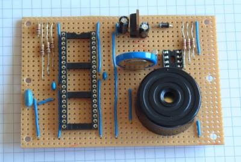
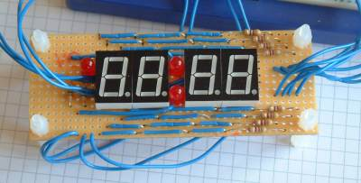
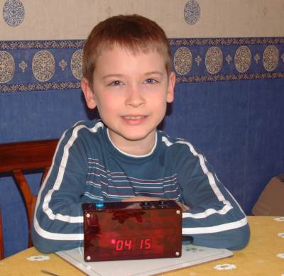

The idea for this project came from my youngest son who asked me to make him an alarm clock. I put together a simple PIC based design comprising of two interlinked vero-board cards. The design was created using New Wave Concepts' LiveWire which allows you to simulate the effect of the signals on the components - very useful it you are new to electronics like me - If only it could simulate the PIC too!.
The larger of the two circuit boards holds the 5V power regulator, the display processor (a PIC 16F74), the real time clock (Dallas DS1307), 3V backup battery and buzzer. Click here to see a copy of the schematic for the base board in a popup window.
The PIC board looked like this before fitting the ICs and LED/switch wire connections. It is also missing the 1Hz signal, I2C clock and I2C data connections between the PIC and RTC chips. ---I used a 4MHz resonator with built in load capacitors instead of the crystal and separate capacitors shown on the schematic. Also I added one more link wire after taking this photo to connect GND to -ve terminal of the backup battery. (The copper tracks run left-to-right on this board with cuts between the IC pins and in a couple of other strategic places - Click here to see my strip board layout sketch).

The PIC microcontroller is programmed to read the real-time clock using I2C serial communication several times a second and update the display. It does no time keeping itself. Even the pulsing central pair of LEDs are driven by the real time clock (by means of a 1Hz output signal) and which is read by the PIC.
The PIC performs two other functions; it compares the time against the alarm settings to determine when it should go off and also handles time, date and alarm setting. The 16F74 has no EEPROM of its own so all the settings are stored in the DS1307 and read at power-on-reset. I was planning to mount connectors on the board for all the switch and display wires but in the end there wasn't enough room so I soldered the wires directly
I ordered a 16F74 microcontroller from Farnell because it had more than enough I/O pins and supported I2C on chip. After I received the chip and read the small print in the data sheet I discovered that the SSP module was only really suitable for an I2C slave. What I really needed was a MSSP module. So my code disables the SSP module and generates the I2C master clock and data signals (on the RC3/SCL and RC4/SDA pins) using a 'bit-banged' approach.
A smaller circuit board holds all the display LEDs and sits above the base board on plastic spacers. Click here to see a copy of the schematic for the display in a popup window.
The numeric display is uses four red common anode seven segment displays I purchased on e-Bay. Each segment anode has its own 'select line' (RA0-RA3) and shares the eight cathode connections (RB0-Rb7) to control the segments. An interrupt routine in the PIC updates each segment in turn for approximately 1/100 of a second and updates the state of the AM/PM and pulsing LEDs. (The vero-board used for this card has copper tracks running top-to-bottom with a central gap running horizontally across the whole board).

The clock boards are installed in a red transparent box. I used an illuminated push to make switch for the reset button (connected the 'lamp' output on the schematics) and plain black switches for the hour/minute adjustment buttons. As this device was going to be plugged in all the time I decided to use a pre-built Maplin 12V mains adaptor to power the clock instead of building something myself.
The programming took a little longer than I expected - I didn't realise that the PIC 'sleep' instruction also stopped the TMR0 timer. I thought I'd 'toasted' the PIC when in fact I'd just programmed it to turn off immediately after powering up. I wasted a week ordering replacement devices when the one I had was fine - I have several spares now!

The finished product and its happy owner.
The following ZIP contains all the PIC assembler need to program the alarm clock. The code is in two pieces: one project builds a library of PIC routines (including start power up modules) and another contains the clock specific code. Build the library first.
| << Back |
|
Contents | Next >> |
© Copyright 2009 Andrew John Jacobs. All rights reserved.
All trademarks and service marks are the properties of their respective owners.